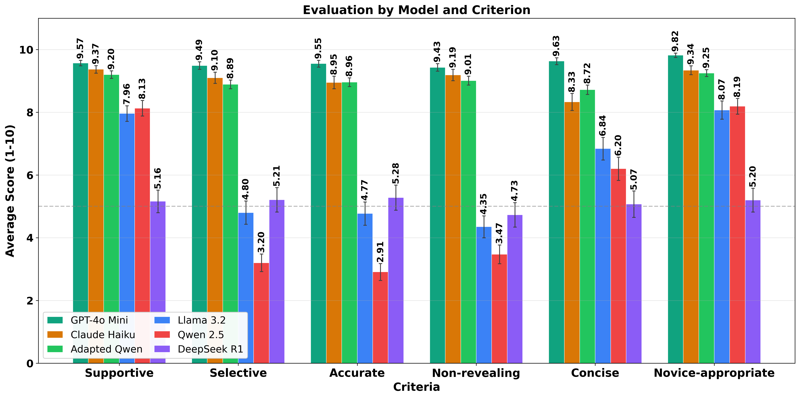

Eduardo Rosales
·
Wyo Hann Chu
·
Rubén Manrique
·
Mario Sánchez
ICAI 2026 · Orlando, October 16
01 · The course
1,000+
students per semester, required across several academic schools
25
students per section, many sections taught in parallel
4
levels, each restricting the constructs students may use
Level 1
Variables, int / float / str, functions, composition
Level 2
Conditionals, bool, Boolean expressions
Level 3
Loops, lists, dictionaries, traversal patterns
Level 4
Matrices; pandas, Matplotlib, NumPy
Practice driven: two lectures and one lab per week, graded Python exercises at every level. At this scale, sustained instructor feedback is hard.
02 · The grader
6 years
in use in the course
700,000+
submissions graded with unit tests
Unlimited
resubmissions, no penalty, near immediate result
Submitted function
def height_in_m(feet, inches):
total = inches + feet * 12
meters = total * 2.54 / 100
return meters
What Senecode reports
FAILED height_in_m(6, 0)
expected: 1.83 got: 1.8288
It tells students what failed, barely why. Students have asked for more specific guidance on the causes of failures, and any new mechanism must keep Senecode's reliability.
03 · The gap
GPT-4o Mini · Claude 4.5 Haiku
1–1.5B parameters, local
Five design constraints
Non-disclosive
Course-level
Reliable
Cost-efficient
Low compute
Can a cost-efficient, adapted SLM approach commercial-LLM quality while satisfying introductory-programming constraints?
04 · Closest related work
Same question, from Stanford's Code in Place and Aalto: can an adapted, code-specialised SLM approach commercial LLMs for scalable programming feedback? Different evidence and different training signal.
| Koutcheme et al. (SIGCSE TS 2026) | This work | |
|---|---|---|
| Setting | Code in Place, massive global online course; 3B SLM, SFT + RL, rubric-based prompting | IP at Uniandes, 1,000+ students; 1.5B SLM, QLoRA |
| Model input | Static submission information | Extended unit tests: each failed test linked to the requirement it checks |
| Adaptation signal | Feedback generated by a teacher LLM (knowledge distillation) | Feedback written and peer-checked by the instructional team |
| Evaluation | Accuracy and selectivity; 53 TAs + LLM-as-a-judge | Seven criteria, 1,000 single-blind human ratings |
Also: 61A Bot and CS50's tutor (GPT-4, human-in-the-loop); Woodrow et al. 2025 (teacher-in-the-loop DPO, LLaMA 3.1-8B preferred over GPT-4o); Kotalwar et al. 2024 (small models under cost, latency and privacy constraints).
05 · Approach
with the level's construct restrictions
to spot deviations, never to be shown
a failing attempt
inputs, expected vs actual, and the purpose of each test
QLoRA adapter trained on human-written feedback · 4-bit · fits a 16 GB GPU
Feedback to the student
Only what is needed to diagnose the failure: long, irrelevant context degrades small models (Liu et al., 2024).
06 · Extended unit tests
Plain test (Senecode today)
>>> result = height_in_m(6, 0)
>>> round(result, 2) == result
True # expected
False # got
The model sees a mismatch and must guess which requirement it violates.
Extended test (this work)
>>> result = height_in_m(6, 0)
>>> round(result, 2) == result
True # expected
False # got
Test 2 · verifies rounding to 2 decimals
builds on Test 1 (return type is float)
The rounding requirement is unmet: enough evidence for a targeted, non-revealing hint.
Descriptions are hand-written per test under the non-disclosive, course-level and reliability constraints: evidence about the failure, not the answer.
07 · Adapting the model
Why this base: code-specialised, supports program reasoning, fits the 16 GB GPU already on campus, and the newest Qwen coder at this size (Qwen3-Coder starts at 30B).
Goal: align format and behaviour with the course constraints, not teach the model new programming knowledge.
08 · Experiments
Commercial LLMs
GPT-4o Mini
Claude 4.5 Haiku
Adapted (ours)
Qwen2.5-Coder-1.5B
+ QLoRA adapter
Off-the-shelf SLMs
Qwen2.5-Coder-1.5B · LLaMA 3.2-1B
DeepSeek-R1-1.5B
10 reviewers
from the IP instructional team; none wrote the training feedback
100 samples each
≈167 per model; every reviewer rated all six models, one rating per sample
Blind
plain-text feedback only, model unknown; same inputs and prompts for all models
Criteria, 1–10
Supportive
Selective
Accurate
Non-revealing
Concise
Novice-appropriate
Hallucination-free (yes / no)
Local models ran on an RTX 4070 Ti SUPER (16 GB VRAM) with 32 GB DDR5 RAM.
09 · Results

10 · Results in numbers
5.34 → 9.01
Overall score, Qwen 2.5 before → after adaptation
+3.67 points on the 10-point scale, p < 0.001, d = 4.30
9.01 ≈ 9.05
Adapted Qwen vs Claude Haiku: statistically tied
difference −0.04, 95% CI [−0.18, +0.09], p = 0.534, d = 0.07
9.58
GPT-4o Mini still leads
+0.57 over the adapted SLM, p < 0.001, d = 1.51; also higher on Non-revealing
21.6% → 91.0%
Hallucination-free responses, before → after
Claude Haiku 77.0% (p < 0.001 vs ours) · GPT-4o Mini 97.6%
On the 16 GB campus GPU (285 W, ≈80 tokens/s) one feedback costs under 0.01 US cents in energy: unlimited attempts stay affordable.
11 · Conclusions
1
Qwen2.5-Coder-1.5B went from 5.34 to 9.01 / 10, statistically tied with Claude Haiku (9.05); GPT-4o Mini remains ahead at 9.58.
2
Hallucination-free feedback rose from 21.6% to 91.0%, above Claude Haiku's 77.0%. Consistent with adaptation aligning format and constraints, not adding programming knowledge.
3
Linking each failed test to the requirement it checks gives a 1.5B model enough evidence for course-aware, non-disclosive feedback at negligible cost.
Thank you · questions? · ee.rosales24@uniandes.edu.co · w.chu@uniandes.edu.co
Backup · Limitations
One SLM, one course, a limited exercise set. Held-out submissions come from exercises seen during adaptation, so overfitting to the pool is not excluded.
Built from recurring error patterns in Senecode's history, all incorrect by design; they do not reproduce the full distribution of authentic student code.
Insiders highly familiar with the course; one reviewer per sample, so inter-rater reliability was not measured.
No comparison with knowledge distillation or self-supervised repair strategies; prompts use test execution only, no static program analysis.
Backup · Future work
→
Generalisation: unseen exercises, other course levels, other programming languages and topics
→
Authorised, de-identified authentic student submissions paired with human-written feedback
→
Multiple and external reviewers, inter-rater agreement, and LLM-as-a-judge alongside humans
→
Compare adaptation strategies: knowledge distillation from teacher LLMs, preference optimisation, self-supervised program-repair pretext tasks
→
Add static-analysis evidence to the prompt; broaden criteria and the set of models evaluated
Backup · Full results
| Criterion | GPT-4o Mini | Claude Haiku | Adapted Qwen | LLaMA 3.2 | Qwen 2.5 | DeepSeek R1 |
|---|---|---|---|---|---|---|
| Supportive | 9.57 ± 0.61 | 9.37 ± 0.77 | 9.20 ± 0.79 | 7.96 ± 1.68 | 8.13 ± 1.62 | 5.16 ± 2.36 |
| Selective | 9.49 ± 0.80 | 9.10 ± 1.17 | 8.90 ± 0.92 | 4.80 ± 2.43 | 3.20 ± 1.86 | 5.21 ± 2.60 |
| Accurate | 9.55 ± 0.71 | 8.95 ± 1.30 | 9.00 ± 0.91 | 4.77 ± 2.42 | 2.91 ± 1.79 | 5.28 ± 2.62 |
| Non-revealing | 9.43 ± 0.79 | 9.19 ± 1.20 | 9.00 ± 0.94 | 4.35 ± 2.28 | 3.47 ± 1.98 | 4.73 ± 2.60 |
| Concise | 9.63 ± 0.72 | 8.33 ± 1.76 | 8.70 ± 0.99 | 6.84 ± 2.37 | 6.20 ± 2.47 | 5.07 ± 2.75 |
| Novice-appropriate | 9.82 ± 0.48 | 9.34 ± 0.95 | 9.30 ± 0.69 | 8.07 ± 1.90 | 8.19 ± 1.65 | 5.20 ± 2.49 |
| Overall | 9.58 ± 0.42 | 9.05 ± 0.81 | 9.01 ± 0.33 | 6.12 ± 1.50 | 5.34 ± 1.16 | 5.10 ± 1.79 |
| Hallucination-free | 97.6% (162/166) | 77.0% (127/165) | 91.0% (151/166) | 52.1% (87/167) | 21.6% (36/167) | 44.9% (75/167) |
Scores 1–10; hallucination-free is the share of valid evaluations with no hallucinated content (95% CI for Adapted Qwen: [85.6, 94.5]).
Backup · Evaluation criteria
Encourages the learner; constructive, non-discouraging tone (Shute; Brookhart)
Focuses only on relevant issues; no unnecessary or nonexistent fixes (Koutcheme et al.)
Correctly identifies the student's actual mistakes (Koutcheme et al.)
Actionable guidance without disclosing the solution (Scarlatos et al.; Shute)
Only the necessary information, no superfluous detail (Shute; Narciss)
Language accessible to novice programmers (Denny et al.)
No fabricated, unsupported or wrong claims about the code or its behaviour (Maynez et al.)
Backup · Design constraints
Non-disclosive
Help students find and fix errors without giving the solution or code; general LLMs may hand over explicit hints or full implementations.
Course-level
Only constructs the student is expected to know at that level; no advanced features or explanations beyond the prerequisites.
Reliability
Correct and clear; hallucinated explanations mislead novices, and long irrelevant context makes them more likely.
Cost
Many students, unlimited resubmissions: paying a commercial LLM per failed attempt is hard to sustain.
Computational resources
Many parallel submissions on shared academic infrastructure: a small model that fits a 16 GB GPU is preferable to a large local LLM.